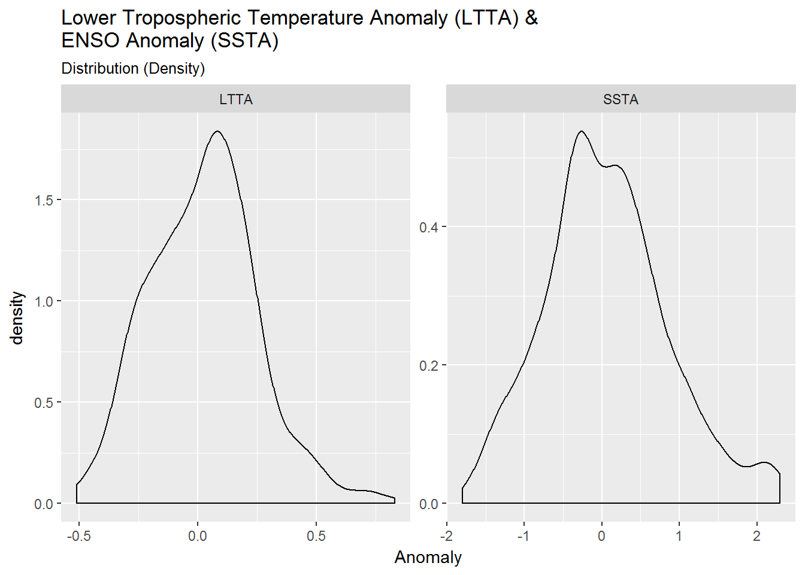
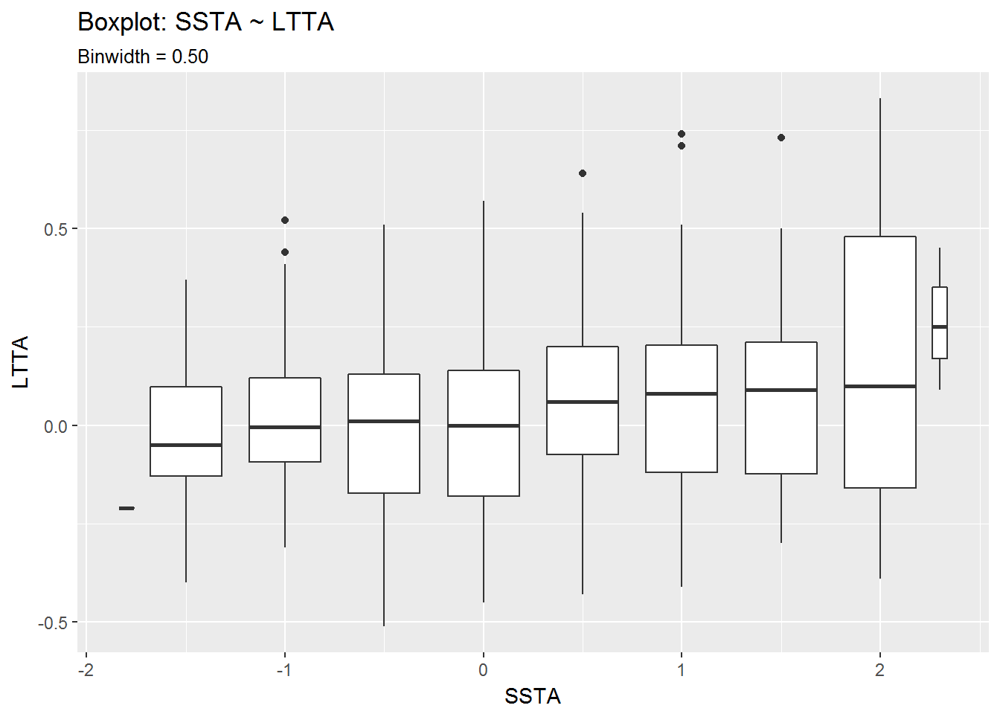
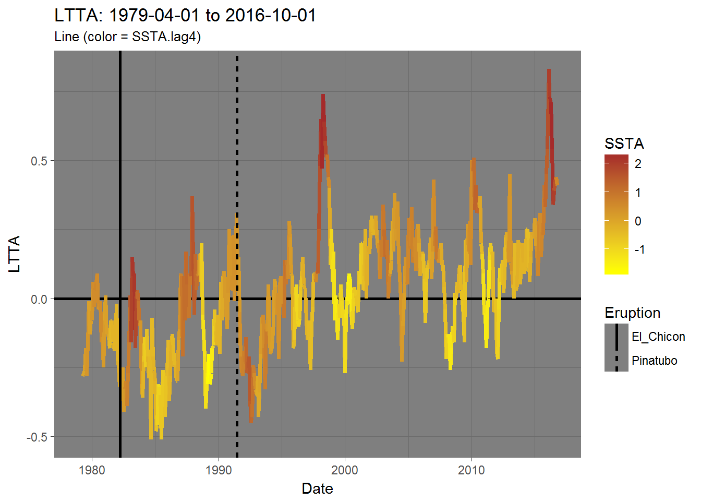
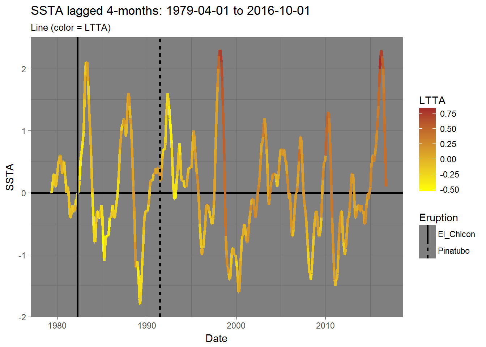
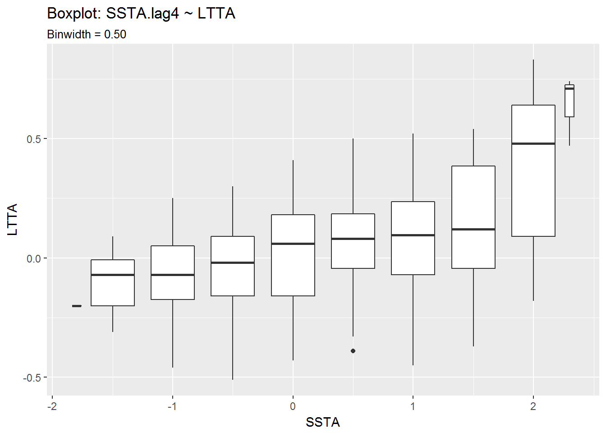
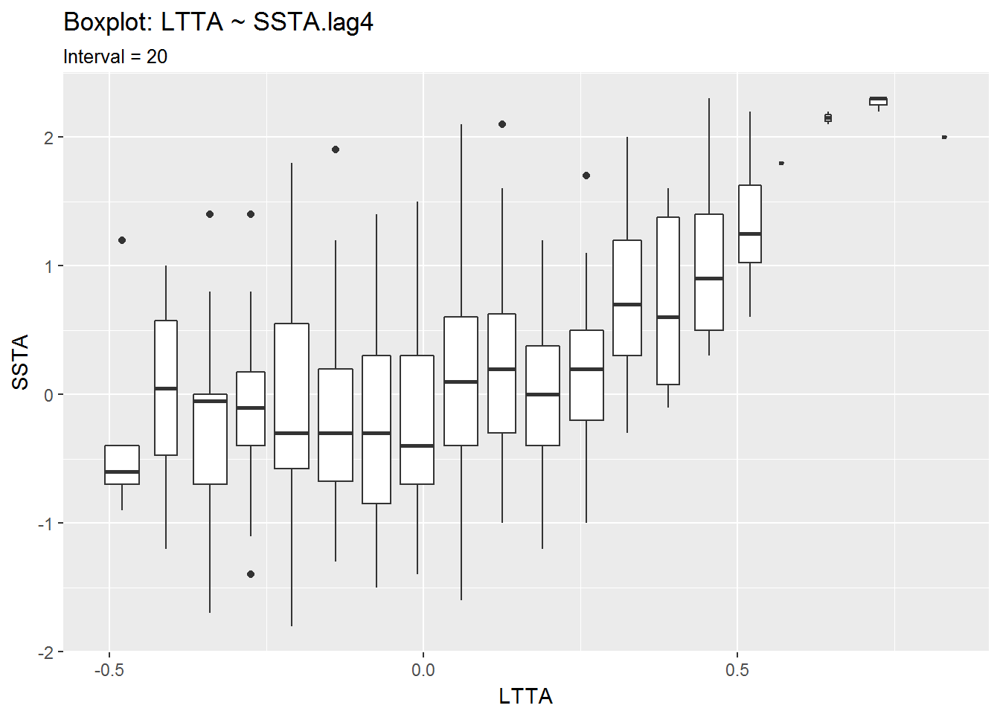
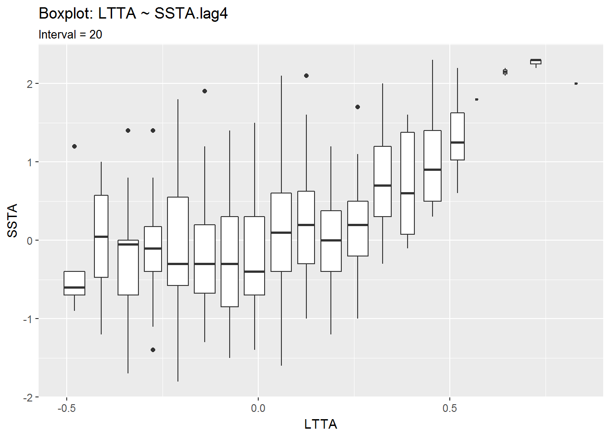

Plotting the El Niño Southern Oscillation and Lower Tropospheric Temperature Anomalies
Dec 20, 2016One of the two largest El Niños on record came to an end this year. From late-2014 to mid-2016, a pool of tropical Pacific water sat 0.5° C above its 1980-2010 average (on a three month central moving average basis). Events such as that can have world wide effects on weather systems and ecosystems, such as droughts in southern Africa and coral bleaching in the Caribbean.
There are two questions I have:
- Was there any noticeable change in the lower tropospheric temperature due to this event?
- Do past El Niño Southern Oscillation (ENSO) events have a noticeable relationship with lower tropospheric temperature?
Downloading and Wrangling the Data
I’ll need two data sets: one that measrues ENSO and one that measures lower-tropospheric temperature data. Fortunately, there are two such datasets available on the internet: ENSO from NOAA and lower-tropospheric temepratures from the University of Alabama-Huntsville.
Both datasets will also need to be cleansed of any miscellaneous information that does not pertain to the data or the data object itself (such as rows with "Year", "DJF", "JFM", etc in the enso table).
# Load Dependencies -------------------------------------------------------
library(dplyr)
library(rvest)
library(tidyr)
library(tibble)
library(stringr)
library(zoo)
# ENSO Data ---------------------------------------------------------------
# - Download data and extract table.
url <- "http://www.cpc.ncep.noaa.gov/products/analysis_monitoring/ensostuff/ensoyears.shtml"
enso.orig <- url %>%
read_html() %>%
html_nodes("table") %>%
.[[8]] %>%
html_table(header = TRUE) %>%
filter(Year != "Year") %>%
as_tibble()
# - Convert three-month central moving average labels to numeric Month-Date.
enso <- enso.orig %>%
rename("01-01" = DJF, "02-01" = JFM, "03-01" = FMA,
"04-01" = MAM, "05-01" = AMJ, "06-01" = MJJ,
"07-01" = JJA, "08-01" = JAS, "09-01" = ASO,
"10-01" = SON, "11-01" = OND, "12-01" = NDJ)
# - Gather and unite data into two columns: Date, SSTA.
enso <- enso %>%
gather(mon, SSTA, -Year) %>%
unite("Date", c(Year, mon), sep = "-") %>%
mutate(Date = as.Date(Date)) %>%
arrange(Date)
# Lower-Troposheric Temperatue Anomaly Data -------------------------------
# - Download data and extract HTML.
url2 <- "http://www.nsstc.uah.edu/data/msu/v6.0beta/tlt/uahncdc_lt_6.0beta5.txt"
ltta <- url2 %>%
read.fwf(widths = c(5, 3, 6)) %>%
as_tibble()
# - Add headers.
names(ltta) <- c("Year", "Mo", "LTTA")
# - Remove leading and trailing white spaces.
ltta <- ltta %>%
mutate(Year = str_trim(Year),
Mo = str_trim(Mo))
# - Remove unecessary first line.
ltta <- ltta[-1, ]
# - Remove miscellaneous text from the bottom of the table.
ltta <- ltta$Year %>%
str_trim() %>%
`==`("Year") %>%
which() %>%
.[[1]] %>%
`:`(length(ltta$Year)) %>%
`-`() %>%
ltta[., ]
# - Combine columns and convert to date.
# - Convert LTTA to numeric (from factor).
ltta <- ltta %>%
unite("Date", c(Year, Mo), sep = "-") %>%
mutate(Date = as.Date(as.yearmon(Date)),
LTTA = as.numeric(as.character(LTTA)))Merge Data
With the datasets downloaded and cleansed, they can now be merged into a single, manageable data frame.
# Merge -------------------------------------------------------------------
# - Merge the two datasets.
gccd <- ltta %>%
inner_join(enso, by = "Date") %>%
filter(nzchar(SSTA)) %>%
mutate(SSTA = as.numeric(SSTA))The resulting data frame should have three columns: Date, LTTA, and SSTA.
## # A tibble: 455 × 3
## Date LTTA SSTA
## <date> <dbl> <dbl>
## 1 1978-12-01 -0.36 0.0
## 2 1979-01-01 -0.33 0.0
## 3 1979-02-01 -0.27 0.1
## 4 1979-03-01 -0.26 0.2
## 5 1979-04-01 -0.28 0.3
## 6 1979-05-01 -0.27 0.3
## 7 1979-06-01 -0.26 0.1
## 8 1979-07-01 -0.18 0.1
## 9 1979-08-01 -0.28 0.2
## 10 1979-09-01 -0.16 0.3
## # ... with 445 more rowsPlot data
Distribution
Histogram and Density
Now that the datasets have been merged, they can be viewed - using ggplot2, of course. Let’s start with some standard histograms and density plots to get an idea about the distribution of the anomalies.
library(ggplot2)
dist <- list()
# - Density: LTTA & SSTA
dist$density <- gccd %>%
gather(-Date, key = "Measurement", value = "Anomaly") %>%
ggplot(aes(Anomaly)) +
facet_wrap(~Measurement, scales = "free") +
geom_density()
# - Histogram: LTTA & SSTA
dist$histogram <- gccd %>%
gather(-Date, key = "Measurement", value = "Anomaly") %>%
ggplot(aes(Anomaly)) +
facet_wrap(~Measurement, scales = "free") +
geom_histogram(binwidth = 0.1)
# - View density
dist$density +
labs(title = "Lower Tropospheric Temperature Anomaly (LTTA) &
ENSO Anomaly (SSTA)",
subtitle = "Distribution (Density)")
# - View histogram
dist$histogram +
labs(title = "Lower Tropospheric Temperature Anomaly (LTTA) &
ENSO Anomaly (SSTA)",
subtitle = "Distribution (Histogram)")
There appears a slightly larger distribution of positive anomalies for both LTTA (mean = 0.022) and SSTA (mean = 0.059).
Boxplots
There is one more kind of distribution plot which may be of use to answer my questions - a boxplot (I am not going to explore point plots at this time). Boxplots are packed with useful information: median values, interquartile range (IQR), and outliers.
I can plot two continuous variables with a boxplot by cutting the data to create binwidths and intervals (bins). It’s also good to explore different binwidths and intervals when using boxplots, so I have chosen a binwidth and interval for each comparison that I felt was good enough.
box <- list()
# Boxplot: SSTA ~ LTTA
box_SSTA.LTTA <- gccd %>%
ggplot(aes(SSTA, LTTA))
box$SSTA.LTTA_binw.5 <- box_SSTA.LTTA +
geom_boxplot(aes(group = cut_width(SSTA, 0.50)))
box$SSTA.LTTA_inter20 <- box_SSTA.LTTA +
geom_boxplot(aes(group = cut_interval(SSTA, 20)))
# Boxplot: LTTA ~ SSTA
box_LLTA.SSTA <- gccd %>%
ggplot(aes(LTTA, SSTA))
box$LTTA.SSTA_binw.25 <- box_LLTA.SSTA +
geom_boxplot(aes(group = cut_width(LTTA, 0.25)))
box$LTTA.SSTA_inter20 <- box_LLTA.SSTA +
geom_boxplot(aes(group = cut_interval(LTTA, 20)))
# - View boxplots
box$SSTA.LTTA_binw.5 + labs(title = "Boxplot: SSTA ~ LTTA",
subtitle = "Binwidth = 0.50")
box$SSTA.LTTA_inter20 + labs(title = "Boxplot: SSTA ~ LTTA",
subtitle = "Bins = 20")
box$LTTA.SSTA_binw.25 + labs(title = "Boxplot: LTTA ~ SSTA",
subtitle = "Binwidth = 0.25")
box$LTTA.SSTA_inter20 + labs(title = "Boxplot: LTTA ~ SSTA",
subtitle = "Bins = 20")


From the second set of boxplots it looks like there is a correlation between positive LTTA values and positive SSTA values. The seems especially true for LTTA values above 0.5°C.
Having looked at all of these distribution plots, I feel it is time to move on to a line graph, where I can map one variable as x and the other as color.
Lines: Plotting against time
I can make a line chart of one variable and use the other variable to mark the color of that line based on its values.
line <- list()
# - Line: LTTA (color = SSTA)
line$LTTA_color.SSTA <- gccd %>%
ggplot() +
geom_hline(yintercept = 0, size = 1) +
geom_line(aes(Date, LTTA, color = SSTA), size = 1.25) +
scale_color_continuous(low = "yellow", high = "brown") +
theme_dark() +
labs(title = "LTTA: 1978-12-01 to 2016-10-01", subtitle = "Line (color = SSTA)")
# - Line: SSTA ()
line$SSTA_color.LTTA <- gccd %>%
ggplot() +
geom_hline(yintercept = 0, size = 1) +
geom_line(aes(Date, SSTA, color = LTTA), size = 1.25) +
scale_color_continuous(low = "yellow", high = "brown") +
theme_dark() +
labs(title = "SSTA: 1978-12-01 to 2016-10-01", subtitle = "Line (color = LTTA)")
# - View: LTTA (color = SSTA)
line$LTTA_color.SSTA
# - View: SSTA (color = LTTA)
line$SSTA_color.LTTA

A lagging relationship
The one thing that stands out to me is that LTTA peaks 4 months after an SSTA peak. That is to say - SSTA is a leading indicator or, in other words, changes in LTTA lag changes in SSTA by 4 months.
I can probably match the peaks in SSTA and LTTA better if I were to set lag(gccd$SSTA, n = 4) as my new SSTA dataset.
gccd_SSTA.lag4 <- gccd %>%
mutate(SSTA = lag(SSTA, 4))
print(gccd_SSTA.lag4)## # A tibble: 455 × 3
## Date LTTA SSTA
## <date> <dbl> <dbl>
## 1 1978-12-01 -0.36 NA
## 2 1979-01-01 -0.33 NA
## 3 1979-02-01 -0.27 NA
## 4 1979-03-01 -0.26 NA
## 5 1979-04-01 -0.28 0.0
## 6 1979-05-01 -0.27 0.0
## 7 1979-06-01 -0.26 0.1
## 8 1979-07-01 -0.18 0.2
## 9 1979-08-01 -0.28 0.3
## 10 1979-09-01 -0.16 0.3
## # ... with 445 more rowsOther factors
From reading the NOAA’s ENSO blog (and other material), I know that that both the El Chicon (1982) and Pinatubo (1991) eruptions had significant effects on global temperatures. So, I’ll also place those two events on my new offset plot to see if there is any visible relationship there as well.
Lines: Revisited with a lagging SSTA
Here is what those previous two line charts look like with the new data.
# - LTTA: (color = lag(SSTA, 4))
line$LTTA_color.SSTA.lag4 <- gccd %>%
mutate(SSTA = lag(SSTA, 4)) %>%
ggplot() +
geom_hline(yintercept = 0, size = 1) +
geom_line(aes(Date, LTTA, color = SSTA), size = 1.25) +
scale_color_continuous(low = "yellow", high = "brown") +
theme_dark() +
labs(title = "LTTA: 1979-04-01 to 2016-10-01",
subtitle = "Line (color = SSTA.lag4)")
# - lag(SSTA, 4): (color = LTTA)
line$SSTA.lag4_color.LTTA <- gccd %>%
mutate(SSTA = lag(SSTA, 4)) %>%
ggplot() +
geom_hline(yintercept = 0, size = 1) +
geom_line(aes(Date, SSTA, color = LTTA), size = 1.25) +
scale_color_continuous(low = "yellow", high = "brown") +
theme_dark() +
labs(title = "SSTA lagged 4-months: 1979-04-01 to 2016-10-01",
subtitle = "Line (color = LTTA)")
# - Eruptions
El_Chicon <- "1982-03-29" %>% as.Date() %>% as.numeric()
Pinatubo <- "1991-06-15" %>% as.Date() %>% as.numeric()
eruptions <- data.frame(Date = c(El_Chicon, Pinatubo),
Eruption = c("El_Chicon", "Pinatubo"),
stringsAsFactors = FALSE)
# - View: LTTA: (color = lag(SSTA, 4))
line$LTTA_color.SSTA.lag4 +
geom_vline(data = eruptions,
mapping = aes(xintercept = Date,
linetype = Eruption),
size = 1,
show.legend = TRUE)
# - View: lag(SSTA, 4): (color = LTTA)
line$SSTA.lag4_color.LTTA +
geom_vline(data = eruptions,
mapping = aes(xintercept = Date,
linetype = Eruption),
size = 1,
show.legend = TRUE)## Warning: Removed 4 rows containing missing values (geom_path).
Boxplots: Revisited
Having seen the relation between the 4-month lagged SSTA and LTTA, I think it would be wise to go back and view the boxplots from earlier with a 4-month lagged SSTA.
# Boxplot: SSTA.lag4 ~ LTTA
SSTA.lag4.LTTA <- gccd %>%
mutate(SSTA = lag(SSTA, 4))
box$SSTA.lag4.LTTA_binw.5 <- SSTA.lag4.LTTA %>%
ggplot(aes(SSTA, LTTA)) +
geom_boxplot(aes(group = cut_width(SSTA, 0.50)))
box$SSTA.lag4.LTTA_inter20 <- SSTA.lag4.LTTA %>%
ggplot(aes(SSTA, LTTA)) +
geom_boxplot(aes(group = cut_interval(SSTA, 20)))
# Boxplot: LTTA ~ SSTA.lag4
LTTA.SSTA.lag4 <- gccd %>%
mutate(SSTA = lag(SSTA, 4))
box$LTTA.SSTA.lag4_binw.25 <- LTTA.SSTA.lag4 %>%
ggplot(aes(LTTA, SSTA)) +
geom_boxplot(aes(group = cut_width(LTTA, 0.25)))
box$LTTA.SSTA.lag4_inter20 <- LTTA.SSTA.lag4 %>%
ggplot(aes(LTTA, SSTA)) +
geom_boxplot(aes(group = cut_interval(LTTA, 20)))
# - View plots
box$SSTA.lag4.LTTA_binw.5 + labs(title = "Boxplot: SSTA.lag4 ~ LTTA",
subtitle = "Binwidth = 0.50")## Warning: Removed 4 rows containing non-finite values (stat_boxplot).box$SSTA.lag4.LTTA_inter20 + labs(title = "Boxplot: SSTA.lag4 ~ LTTA",
subtitle = "Interval = 20")## Warning: Removed 4 rows containing non-finite values (stat_boxplot).box$LTTA.SSTA.lag4_binw.25 + labs(title = "Boxplot: LTTA ~ SSTA.lag4",
subtitle = "Binwidth = 0.25")## Warning: Removed 4 rows containing non-finite values (stat_boxplot).box$LTTA.SSTA.lag4_inter20 + labs(title = "Boxplot: LTTA ~ SSTA.lag4",
subtitle = "Interval = 20")## Warning: Removed 4 rows containing non-finite values (stat_boxplot).
 

Conclusion
This wasn’t a very rigorous analysis of the data, but with the lag applied to SSTA, the relationship between the two variables becomes more clear.
Changes in SSTA lead similar changes in LTTA. This may not be true for every case, such as after the Pinatubo eruption in which LTTA dropped despite a rise in SSTA, or recently when SSTA began dropping mid-2016 while LTTA dropped but then began to rise shortly after.
For now, I feel my questions have been answered. There was a noticeable effect on LTTA due to the most recent El Niño, and I think there is an expected correlation between SSTA and LTTA. I will try to revist this later on with other datasets.